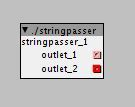
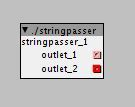

trying to compile with netbeans but it seems its a bit changed since beta - too beginner to understand how to fix these errors:
**edit: well they arent really errors, i just dont have git or curl setup on this windows install in the right way. researching how to get Git and Curl for mingw..
ant -f C:\\Users\\alex\\Downloads\\Axoloti-clone -Dnb.internal.action.name=build jar
calc.build.version:
Execute failed: java.io.IOException: Cannot run program "git" (in directory "C:\Users\alex\Downloads\Axoloti-clone"): CreateProcess error=2, The system cannot find the file specified
calculated ${build.version}
create.build.version:
init:
Deleting: C:\Users\alex\Downloads\Axoloti-clone\build\built-jar.properties
deps-jar:
Updating property file: C:\Users\alex\Downloads\Axoloti-clone\build\built-jar.properties
Compiling 1 source file to C:\Users\alex\Downloads\Axoloti-clone\build\classes
warning: [options] bootstrap class path not set in conjunction with -source 1.6
1 warning
compile:
Building jar: C:\Users\alex\Downloads\Axoloti-clone\dist\Axoloti.jar
calc.short.version:
Execute failed: java.io.IOException: Cannot run program "git" (in directory "C:\Users\alex\Downloads\Axoloti-clone"): CreateProcess error=2, The system cannot find the file specified
calculated short ${
userguide:
generate user guide
Execute failed: java.io.IOException: Cannot run program "curl" (in directory "C:\Users\alex\Downloads\Axoloti-clone"): CreateProcess error=2, The system cannot find the file specified
bundle:
runtime:
Warning: Setting Codebase manifest attribute to '*' due to current JNLP Codebase. Set manifest.custom.codebase property to override the non-secure value '*'.
jnlp:
jar:
BUILD SUCCESSFUL (total time: 1 second)


 
